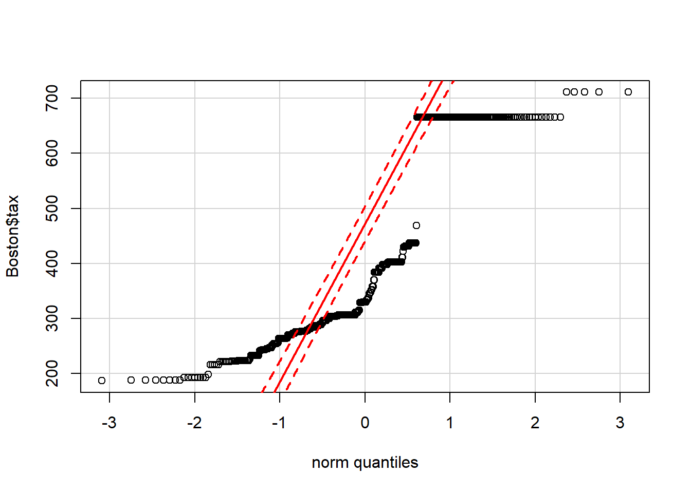

7 Data Visualization
Notes taken during/inspired by the Datacamp course ‘Data Visualization in R’ by Ronald Pearson.
7.1 Base R Graphics
Two basic types of data visualizations:
- Exploratory visualizations help us understand the data
- Explanatory visualizations help us share ourunderstanding with others
There are four graphics systems in R:
- Base graphics: Easiest to learn and focus of this course
- Grid graphics: powerful set of modules for building othertools
- Lattice graphics: general purpose system based on grid graphics
- ggplot2: “the grammar of graphics”
Grid graphics allows more control of the output but is more complex, typically it is used by package developers and both lattice and ggplot2 build on this.
# Load MASS package
library(MASS)
# Plot whiteside data
plot(whiteside)# Plot Gas vs. Temp
plot(whiteside$Temp, whiteside$Gas, ylab = "Heating gas consumption", xlab = "Outside temperature")# Apply the plot() function to Insul - R will automatically change the plot type to suit the data (a factor)
plot(whiteside$Insul)Adding additional details to your explanatory plots can help emphasize certain aspects of your data. For example, by specifying the pch and col arguments to the plot() function, you can add different point shapes and colors to show how different variables or subsets of your data relate to each other. In addition, you can add a new set of points to your existing scatterplot with the points() function, and add reference lines with the abline() function.
# Plot Max.Price vs. Price as red triangles
plot(Cars93$Price, Cars93$Max.Price, pch = 17, col = "red")
# Add Min.Price vs. Price as blue circles
points(Cars93$Price, Cars93$Min.Price, pch = 16, col = "blue")
# Add an equality reference line with abline() - lty=2 makes a dashed line
abline(a = 0, b = 1, lty = 2)You can plot multiple graphs on a single pane using the par() function with its mfrow parameter. For example, par(mfrow = c(1, 2)) creates a plot array with 1 row and 2 columns, allowing you to view two graphs side-by-side. This way, you can compare and contrast different datasets or different views of the same dataset. This exercise asks you to compare two views of the Animals2 dataset from the robustbase package, differing in how its variables are represented.
The objective of this exercise is to emphasize that the original representation of the variables that we have in a dataset is not always the best one for visualization or analysis. By representing the original variables in log scale, for example, we can better see and understand the data.
# Load the robustbase package
library(robustbase)
# Set up the side-by-side plot array
par(mfrow = c(1, 2))
# First plot: brain vs. body in its original form
plot(Animals2$body, Animals2$brain)
# Add the first title
title("Original representation")
# Second plot: log-log plot of brain vs. body
plot(Animals2$body, Animals2$brain, log = "xy")
# Add the second title
title("Log-log plot")Sometimes, log-transforming the x and y variables by specifying log = “xy” inside the plot() function can make it a lot easier to see the direct relationship between the two variables. Similarly, you can specify log = “y” to log-transform only the y variable and log = “x” to log-transform only the x variable.
7.1.1 Avoiding pie charts
The same dataset can be displayed or summarized in many different ways, but some are much more suitable than others.
Despite their general popularity, pie charts are often a poor choice. Though R allows pie charts with the pie() function, even the help file for this function argues against their use. Specifically, the help file includes a “Note” that begins with the words: “Pie charts are a very bad way of displaying information.”
Bar charts are a recommended alternative.
# Load the insuranceData package
library(insuranceData)
# Use the data() function to get the dataCar data frame
data(dataCar)
# Set up a side-by-side plot array
par(mfrow = c(1, 2))
# Create a table of veh_body record counts and sort
tbl <- sort(table(dataCar$veh_body),
decreasing = TRUE)
# Create the pie chart and give it a title
pie(tbl) + title("Pie chart")## integer(0)# Create the barplot with perpendicular, half-sized labels
barplot(tbl, las = 2, cex.names = 0.5)
# Add a title
title("Bar chart")7.2 Different Plot Types
Histograms are probably the best-known way of looking at how the values of a numerical variable are distributed over their range, and R provides several different histogram implementations.
The purpose of this exercise is to introduce two of these:
hist() is part of base R and its default option yields a histogram based on the number of times a record falls into each of the bins on which the histogram is based. truehist() is from the MASS package and scales these counts to give an estimate of the probability density.
# Set up a side-by-side plot array
par(mfrow = c(1, 2))
# Create a histogram of counts with hist()
hist(Cars93$Horsepower, main = "hist() plot")
# Create a normalized histogram with truehist()
truehist(Cars93$Horsepower, main = "truehist() plot")While they are probably not as well known as the histogram, density estimates may be regarded as smoothed histograms, designed to give a better estimate of the density function for a random variable.
In this exercise, you’ll use the ChickWeight dataset, which contains a collection of chicks’ weights. You will first select for the chicks that are 16 weeks old. Then, you’ll create a histogram using the truehist() function, and add its density plot on top, using the lines() and density() functions with their default options. The density plot of this type of variable is often expected to conform approximately to the bell-shaped curve, otherwise known as the Gaussian distribution. Let’s find out whether that’s the case for this dataset.
# Create index16, pointing to 16-week chicks
index16 <- which(ChickWeight$Time == 16)
# Get the 16-week chick weights
weights <- ChickWeight$weight[index16]
# Plot the normalized histogram
truehist(weights)
# Add the density curve to the histogram
lines(density(weights))A practical limitation of both histograms and density estimates is that, if we want to know whether the Gaussian distribution assumption is reasonable for our data, it is difficult to tell.
The quantile-quantile plot, or QQ-plot, is a useful alternative: we sort our data, plot it against a specially-designed x-axis based on our reference distribution (e.g., the Gaussian “bell curve”), and look to see whether the points lie approximately on a straight line. In R, several QQ-plot implementations are available, but the most convenient one is the qqPlot() function in the car package.
The first part of this exercise applies this function to the 16-week chick weight data considered in the last exercise, to show that the Gaussian distribution appears to be reasonable here. The second part of the exercise applies this function to another variable where the Gaussian distribution is obviously a poor fit, but the results also show the presence of repeated values (flat stretches in the plot) and portions of the data range where there are no observations (vertical “jumps” in the plot).
# Load the car package to make qqPlot() available
library(car)## Warning: package 'car' was built under R version 3.4.2# Show the normal QQ-plot of the chick weights
qqPlot(weights)# Show the normal QQ-plot of the Boston$tax data
qqPlot(Boston$tax)
The points lie in a relatively straight line only if the data is normally distributed (ie. Its density plot is approximately a Gaussian distribution). So looking at the second QQ-plot, you can see that the tax variable in the Boston data frame is definitely not normally distributed.
A scatterplot represents each (x, y) pair in a dataset by a single point. If some of these pairs are repeated (i.e. if the same combination of x and y values appears more than once and thus lie on top of each other), we can’t see this in a scatterplot. Several approaches have been developed to deal with this problem, including jittering, which adds small random values to each x and y value, so repeated points will appear as clusters of nearby points.
A useful alternative that is equally effective in representing repeated data points is the sunflowerplot, which represents each repeated point by a “sunflower,” with one “petal” for each repetition of a data point.
Note the large cluster in the upper left corner of the plot, indicating that records with the maximum rad value and zero zn value occur many times.
# Set up a side-by-side plot array
par(mfrow = c(1, 2))
# Create the standard scatterplot
plot(rad ~ zn, data = Boston)
# Add the title
title("Standard scatterplot")
# Create the sunflowerplot
sunflowerplot(rad ~ zn, data = Boston)
# Add the title
title("Sunflower plot")The boxplot() function shows how the distribution of a numerical variable y differs across the unique levels of a second variable, x. To be effective, this second variable should not have too many unique levels (e.g., 10 or fewer is good; many more than this makes the plot difficult to interpret).
The boxplot() function also has a number of optional parameters and this exercise asks you to use three of them to obtain a more informative plot:
- varwidth allows for variable-width boxplots that show the different sizes of the data subsets.
- log allows for log-transformed y-values.
- las allows for more readable axis labels.
This exercise also illustrates the use of the formula interface: y ~ x indicates that we want a boxplot of the y variable across the different levels of the x variable.
You can see from the wider boxplots for rad = 4, 5, and 24 how much larger these subsets are than the others.
# Create a variable-width boxplot with log y-axis & horizontal labels
boxplot(crim ~ rad, data = Boston, varwidth = TRUE, log = "y", las = 1 )
# Add a title
title("Crime rate vs. radial highway index")A mosaic plot may be viewed as a scatterplot between categorical variables and it is supported in R with the mosaicplot() function.
As this example shows, in addition to categorical variables, this plot can also be useful in understanding the relationship between numerical variables, either integer- or real-valued, that take only a few distinct values.
More specifically, this exercise asks you to construct a mosaic plot showing the relationship between the numerical carb and cyl variables from the mtcars data frame, variables that exhibit 6 and 3 unique values, respectively.
# Create a mosaic plot using the formula interface
mosaicplot(carb ~ cyl, data = mtcars)A single box plot gives a graphical representation of the range of variation in a numerical variable, based on five numbers:
- The minimum and maximum values
- The median (or “middle”) value
- Two intermediate values called the lower and upper quartiles
In addition, the standard box plot computes a nominal data range from three of these numbers and flags points falling outside this range as outliers, representing them as distinct points.
The bag plot extends this representation to two numerical variables, showing their relationship, both within two-dimensional “bags” corresponding to the “box” in the standard boxplot, and indicating outlying points outside these limits.
# Create a side-by-side boxplot summary
boxplot(Cars93$Min.Price, Cars93$Max.Price)# Load aplpack to make the bagplot() function available
library(aplpack)## Loading required package: tcltk# Create a bagplot for the same two variables
bagplot(Cars93$Min.Price, Cars93$Max.Price, cex = 1.2)
# Add an equality reference line
abline(a = 0, b = 1, lty = 2)Correlation matrices were introduced in the video as a useful tool for obtaining a preliminary view of the relationships between multiple numerical variables.
This exercise asks you to use the corrplot() function from the corrplot package to visualize this correlation matrix for the numerical variables from the UScereal data frame in the MASS package. Recall that in this version of these plots, ellipses that are thin and elongated indicate a large correlation value between the indicated variables, while ellipses that are nearly circular indicate correlations near zero.
# Load the corrplot library for the corrplot() function
library(corrplot)
# Extract the numerical variables from UScereal
numericalVars <- UScereal[, 2:10]
# Compute the correlation matrix for these variables
corrMat <- cor(numericalVars)
# Generate the correlation ellipse plot
corrplot(corrMat, method = "ellipse")Decision trees represent a popular form of predictive model because they are easy to visualize and explain, rpart package is probably the most popular of several R packages that can be used to build and visualize these models.
# Load the rpart library
library(rpart)
# Fit an rpart model to predict medv from all other Boston variables
tree_model <- rpart(medv ~., data = Boston)
# Plot the structure of this decision tree model
plot(tree_model)
# Add labels to this plot
text(tree_model, cex = 0.7)7.3 Adding details to plots
You already saw how the mfrow parameter to the par() function could be used to plot multiple graphs in one pane. The par() function also allows you to set many other graphics parameters, whose values will remain in effect until they are reset by a subsequent par() call.
Specifically, a call to the par() function with no parameters specified will return a list whose element names each specify a graphics parameter and whose element values specify the corresponding default values of these parameters. These parameters may be set by a call in the form par(name = value) where name is the name of the parameter to be set and value is the value to be assigned to this parameter. The following section shows the number of functions contained within the base R par function.
# Assign the return value from the par() function to plot_pars
plot_pars <- par()
# Display the names of the par() function's list elements
names(plot_pars)## [1] "xlog" "ylog" "adj" "ann" "ask"
## [6] "bg" "bty" "cex" "cex.axis" "cex.lab"
## [11] "cex.main" "cex.sub" "cin" "col" "col.axis"
## [16] "col.lab" "col.main" "col.sub" "cra" "crt"
## [21] "csi" "cxy" "din" "err" "family"
## [26] "fg" "fig" "fin" "font" "font.axis"
## [31] "font.lab" "font.main" "font.sub" "lab" "las"
## [36] "lend" "lheight" "ljoin" "lmitre" "lty"
## [41] "lwd" "mai" "mar" "mex" "mfcol"
## [46] "mfg" "mfrow" "mgp" "mkh" "new"
## [51] "oma" "omd" "omi" "page" "pch"
## [56] "pin" "plt" "ps" "pty" "smo"
## [61] "srt" "tck" "tcl" "usr" "xaxp"
## [66] "xaxs" "xaxt" "xpd" "yaxp" "yaxs"
## [71] "yaxt" "ylbias"# Display the number of par() function list elements
length(plot_pars)## [1] 72One of the important graphics parameters that can be set with the par() function is mfrow, which specifies the numbers of rows and columns in an array of plots. Valid values for this parameter are two-element numerical vectors, whose first element specifies the number of rows in the plot array and the second element specifies the number of rows.
A more detailed discussion of using the mfrow parameter is given in Chapter 4 of this course. For now, note that to specify a plot array with three rows and one column, the command would be par(mfrow = c(3, 1)).
The following exercise also introduces the type parameter for the plot() command, which specifies how the plot is drawn. The specific type values used here are:
- “p” for “points”
- “l” for “lines”
- “o” for “overlaid” (i.e., lines overlaid with points)
- “s” for “steps”
# Set up a 2-by-2 plot array
par(mfrow = c(2, 2))
# Plot the Animals2 brain weight data as points
plot(Animals2$brain, type = "p")
# Add the title
title("points")
# Plot the brain weights with lines
plot(Animals2$brain, type = "l")
# Add the title
title("lines")
# Plot the brain weights as lines overlaid with points
plot(Animals2$brain, type = "o")
# Add the title
title("overlaid")
# Plot the brain weights as steps
plot(Animals2$brain, type = "s")
# Add the title
title("steps")The type = “n” option was discussed in the video and this exercise provides a simple example. This option is especially useful is when we are plotting data from multiple sources on a common set of axes. In such cases, we can compute ranges for the x- and y-axes so that all data points will appear on the plot, and then add the data with subsequent calls to points() or lines() as appropriate.
This exercise asks you to generate a plot that compares mileage vs. horsepower data from two different sources: the mtcars data frame in the datasets package and the Cars93 data frame in the MASS package. To distinguish the different results from these data sources, the graphics parameter pch is used to specify point shapes. See ?points for a comprehensive list of some pch values and their corresponding point shapes.
# Compute max_hp
max_hp <- max(Cars93$Horsepower, mtcars$hp)
# Compute max_mpg
max_mpg <- max(Cars93$MPG.city, Cars93$MPG.highway, mtcars$mpg)
# Create plot with type = "n"
plot(max_mpg, max_hp,
type = "n", xlim = c(0, max_hp),
ylim = c(0, max_mpg), xlab = "Horsepower",
ylab = "Miles per gallon")
# Add open circles to plot
points(mtcars$hp,mtcars$mpg, pch = 1)
# Add solid squares to plot
points(Cars93$Horsepower, Cars93$MPG.city, pch = 15)
# Add open triangles to plot
points(Cars93$Horsepower, Cars93$MPG.highway, pch = 2)Numerical data is often assumed to conform approximately to a Gaussian probability distribution, characterized by the bell curve. One point of this exercise is to show what this bell curve looks like for exactly Gaussian data and the other is to show how the lines() function can be used to add lines to an existing plot.
The curves you are asked to draw here have the same basic shape but differ in their details (specifically, the means and standard deviations of these Gaussian distributions are different). For this reason, it is useful to draw these curves with different line types to help us distinguish them.
Note that line types are set by the lty argument, with the default value lty = 1 specifying solid lines, lty = 2 specifying dashed lines, and lty = 3 specifying dotted lines. Also note that the lwd argument specifies the relative width.
# Create the numerical vector x
x <- seq(0, 10, length = 200)
# Compute the Gaussian density for x with mean 2 and standard deviation 0.2
gauss1 <- dnorm(x, mean = 2, sd = 0.2)
# Compute the Gaussian density with mean 4 and standard deviation 0.5
gauss2 <- dnorm(x, mean = 4, sd = 0.5)
# Plot the first Gaussian density
plot(x, gauss1, type = "l", ylab = "Gaussian probability density")
# Add lines for the second Gaussian density
lines(x, gauss2, lty = 2, lwd = 3)One advantage of specifying the pch argument locally is that, in a call to functions like plot() or points(), local specification allows us to make pch depend on a variable in our dataset. This provides a simple way of indicating different data subsets with different point shapes or symbols.
The first plot specifies the point shapes using numerical values of the pch argument defined by the cyl variable in the mtcars data frame. The second plot illustrates the fact that pch can also be specified as a vector of single characters, causing each point to be drawn as the corresponding character.
# Create an empty plot using type = "n"
plot(mtcars$hp, mtcars$mpg, type = "n", xlab = "Horsepower", ylab = "Gas mileage")
# Add points with shapes determined by cylinder number
points(mtcars$hp, mtcars$mpg, pch = mtcars$cyl)
# Create a second empty plot
plot(mtcars$hp, mtcars$mpg, type = "n", xlab = "Horsepower", ylab = "Gas mileage")
# Add points with shapes as cylinder characters
points(mtcars$hp, mtcars$mpg, pch = as.character(mtcars$cyl))The low-level plot function abline() adds a straight line to an existing plot. This line is specified by an intercept parameter a and a slope parameter b, and the simplest way to set these parameters is directly. For example, the command abline(a = 0, b = 1) adds an equality reference line with zero intercept and unit (i.e. 1) slope: points for which y = x fall on this reference line, while points with y > x fall above it, and points with y < x fall below it.
An alternative way of specifying these parameters is through a linear regression model that determines them from data. One common application is to generate a scatterplot of y versus x, then fit a linear model that predicts y from x, and finally call abline() to add this best fit line to the plot.
The standard R function that fits linear regression models is lm(), which supports the formula interface. Thus, to fit a linear model that predicts y from x in the data frame df, the call would be lm(y ~ x, data = df). This call returns a linear model object, which can then be passed as an argument to the abline() function to draw the desired line on our plot.
# Build a linear regression model for the whiteside data
linear_model <- lm(Gas ~ Temp, data = whiteside)
# Create a Gas vs. Temp scatterplot from the whiteside data
plot(whiteside$Temp, whiteside$Gas)
# Use abline() to add the linear regression line
abline(linear_model, lty = 2)7.4 Adding text
One of the main uses of the text() function is to add informative labels to a data plot. The text() function takes three arguments:
- x, which specifies the value for the x variable,
- y, which specifies the value for the y variable, and
- label, which specifies the label for the x-y value pair.
This exercise asks you to first create a scatterplot of city gas mileage versus horsepower from the Cars93 data, then identify an interesting subset of the data (i.e. the 3-cylinder cars) and label these points. You will find that assigning a vector to the x, y, and label arguments to text() will result in labeling multiple points at once.
# Create MPG.city vs. Horsepower plot with solid squares
plot(Cars93$Horsepower, Cars93$MPG.city, pch = 15)
# Create index3, pointing to 3-cylinder cars
index3 <- which(Cars93$Cylinders == "3")
# Add text giving names of cars next to data points
text(x = Cars93$Horsepower[index3],
y = Cars93$MPG.city[index3],
labels = Cars93$Make[index3], adj = 0)It was noted that the adj argument to the text() function determines the horizontal placement of the text and it can take any value between 0 and 1. In fact, this argument can take values outside this range. That is, making this value negative causes the text to start to the right of the specified x position. Similarly, making adj greater than 1 causes the text to end to the left of the x position.
Another useful optional argument for the text() function is cex, which scales the default text size. As a specific example, setting cex = 1.5 increases the text size by 50 percent, relative to the default value. Similarly, specifying cex = 0.8 reduces the text size by 20 percent.
Finally, the third optional parameter used here is font, which can be used to specify one of four text fonts: font = 1 is the default text font (neither italic nor bold), font = 2 specifies bold face text, font = 3 specifies italic text, and font = 4 specifies both bold and italic text.
# Plot MPG.city vs. Horsepower as open circles
plot(Cars93$Horsepower, Cars93$MPG.city, pch = 1)
# Create index3, pointing to 3-cylinder cars
index3 <- which(Cars93$Cylinders == 3)
# Highlight 3-cylinder cars as solid circles
points(Cars93$Horsepower[index3], Cars93$MPG.city[index3], pch = 16)
# Add car names, offset from points, with larger bold text
text(
Cars93$Horsepower[index3],
Cars93$MPG.city[index3],
Cars93$Make[index3],
adj = -0.2,
cex = 1.2,
font = 4)In addition to the optional arguments used in the previous exercises, the text() function also supports a number of other optional arguments that can be used to enhance the text. This exercise uses the cex argument to reduce the text size and introduces two new arguments. The first is the col argument that specifies the color used to display the text, and the second is the srt argument that allows us to rotate the text.
Color has been used in several of the previous exercises to specify point colors, and the effective use of color is discussed further in Chapter 5. One of the points of this exercise is to show that the specification of text color with the text() function is essentially the same as the specification of point color with the plot() function. As a specific example, setting col = “green” in the text() function causes the text to appear in green. If col is not specified, the text appears in the default color set by the par() function, which is typically black.
The srt parameter allows us to rotate the text through an angle specified in degrees. The typical default value (set by the par() function) is 0, causing the text to appear horizontally, reading from left to right. Specifying srt = 90 causes the text to be rotated 90 degrees counter-clockwise so that it reads from bottom to top instead of left to right.
# Plot Gas vs. Temp as solid triangles
plot(whiteside$Temp, whiteside$Gas, pch=17)
# Create indexB, pointing to "Before" data
indexB <- which(whiteside$Insul == "Before")
# Create indexA, pointing to "After" data
indexA <- which(whiteside$Insul == "After")
# Add "Before" text in blue, rotated 30 degrees, 80% size
text(x = whiteside$Temp[indexB], y = whiteside$Gas[indexB],
labels = "Before", col = 'blue', srt = 30, cex = .8)
# Add "After" text in red, rotated -20 degrees, 80% size
text(x = whiteside$Temp[indexA], y = whiteside$Gas[indexA],
labels = "After", col = 'red', srt = -20, cex = .8)7.4.1 Adding details to plots
It is possible to add your own legend and custom axix, both in terms of scale and positioning i.e. at the top rather than at the bottom. This section gives some examples on how to acheive this.
# Set up and label empty plot of Gas vs. Temp
plot(whiteside$Temp, whiteside$Gas,
type = "n",
xlab = "Outside temperature",
ylab = "Heating gas consumption")
# Create indexB, pointing to "Before" data
indexB <- which(whiteside$Insul == "Before")
# Create indexA, pointing to "After" data
indexA <- which(whiteside$Insul == "After")
# Add "Before" data as solid triangles
points(whiteside$Temp[indexB], whiteside$Gas[indexB], pch = 17)
# Add "After" data as open circles
points(whiteside$Temp[indexA], whiteside$Gas[indexA], pch = 1)
# Add legend that identifies points as "Before" and "After"
legend("topright", pch = c(17, 1), legend = c("Before", "After"))Typical base graphics functions like boxplot() provide x- and y-axes by default, with a label for the x-axis below the plot and one for the y-axis label to the left of the plot. These labels are generated automatically from the variable names used to generate the plot. Sometimes, we want to provide our own axes labels, and R makes this possible in two steps: first, we suppress the default axes when we create the plot by specifying axes = FALSE; then, we call the low-level graphics function axis() to create the axes we want.
# Create a boxplot of sugars by shelf value, without axes
boxplot(sugars ~ shelf, data = UScereal, axes = F)
# Add a default y-axis to the left of the boxplot
axis(side = 2)
# Add an x-axis below the plot, labelled 1, 2, and 3
axis(side = 1, at = c(1,2,3))
# Add a second x-axis above the plot
axis(side = 3, at = c(1,2,3),
labels = c("floor","middle","top"))We may want to add a curved trend line that highlights this behavior of the data and the supsmu() function represents one way of doing this.
To use this function, we need to specify values for the required arguments x and y, but it also has a number of optional arguments. Here, we consider the optional bass argument, which controls the degree of smoothness in the resulting trend curve. The default value is 0, but specifying larger values (up to a maximum of 10) results in a smoother curve. This exercise asks you to use the supsmu() function to add two trend lines to a scatterplot, one using the default parameters and the other with increased smoothness.
# Create a scatterplot of MPG.city vs. Horsepower
plot(Cars93$Horsepower, Cars93$MPG.city)
# Call supsmu() to generate a smooth trend curve, with default bass
trend1 <- supsmu(Cars93$Horsepower, Cars93$MPG.city)
# Add this trend curve to the plot
lines(trend1)
# Call supsmu() for a second trend curve, with bass = 10
trend2 <- supsmu(Cars93$Horsepower, Cars93$MPG.city, bass = 10)
# Add this trend curve as a heavy, dotted line
lines(trend2, lty = 3, lwd = 2)
7.5 How much is too much
The first example presented in this file applied the plot() function to a data frame, yielding an array of scatterplots with one for each pair of columns in the data frame. Thus, the number of plots in this array is equal to the square of the number of columns in the data frame.
This means that if we apply the plot() function to a data frame with many columns, we will generate an enormous array of scatterplots, each of which will be too small to be useful. The purpose of this exercise is to provide a memorable example.
# Compute the number of plots to be displayed
ncol(Cars93)^2## [1] 729# Plot the array of scatterplots
plot(Cars93)The matplot() function can be used to easily generate a plot with several scatterplots on the same set of axes. By default, the points in these scatterplots are represented by the numbers 1 through n, where n is the total number of scatterplots included, but most of the options available with the plot() function are also possible by specifying the appropriate arguments.
# Construct the vector keep_vars
keep_vars <- c("calories", "protein", "fat",
"fibre", "carbo", "sugars")
# Use keep_vars to extract the desired subset of UScereal
df <- UScereal[, keep_vars]
# Set up a two-by-two plot array
par(mfrow = c(2, 2))
# Use matplot() to generate an array of two scatterplots
matplot(
UScereal$calories,
UScereal[,c('protein', 'fat')],
xlab = "calories",
ylab = "")
# Add a title
title("Two scatterplots")
# Use matplot() to generate an array of three scatterplots
matplot(
UScereal$calories,
UScereal[,c('protein', 'fat', 'fibre')],
xlab = "calories",
ylab = "")
# Add a title
title("Three scatterplots")
# Use matplot() to generate an array of four scatterplots
matplot(
UScereal$calories,
UScereal[,c('protein', 'fat', 'fibre', 'carbo')],
xlab = "calories",
ylab = "")
# Add a title
title("Four scatterplots")
# Use matplot() to generate an array of five scatterplots
matplot(
UScereal$calories,
UScereal[,c('protein', 'fat', 'fibre', 'carbo','sugars')],
xlab = "calories",
ylab = "")
# Add a title
title("Five scatterplots")Any data visualization loses its utility if it becomes too complex.
This exercise asks you to consider this problem with wordclouds, displays that present words in varying sizes depending on their frequency. That is, more frequent words appear larger in the display, while rarer words appear in a smaller font.
In R, wordclouds are easy to generate with the wordcloud() function in the wordcloud package. This function is called with a character vector of words, and a second numerical vector giving the number of times each word appears in the collection used to generate the wordcloud.
Two other useful arguments for this function are scale and min.freq. The scale argument is a two-component numerical vector giving the relative size of the largest word in the display and that of the smallest word. The wordcloud only includes those words that occur at least min.freq times in the collection and the default value for this argument is 3.
library(wordcloud)## Loading required package: methods## Loading required package: RColorBrewermfr_table <- table(Cars93$Manufacturer)
# Create the default wordcloud from this table
wordcloud(
words = names(mfr_table),
freq = as.numeric(mfr_table),
scale = c(2, 0.25))
# Change the minimum word frequency
wordcloud(
words = names(mfr_table),
freq = as.numeric(mfr_table),
scale = c(2, 0.25),
min.freq = 1)# Create model_table of model frequencies
model_table <- table(Cars93$Model)
# Create the wordcloud of all model names with smaller scaling
wordcloud(
words = names(model_table),
freq = as.numeric(model_table),
scale = c(.75, .25),
min.freq = 1)7.5.1 Mutiple Plots
There are a couple of ways to set up multiple plot arrays, one is mfrow.
This exercise and the next one are based on the Anscombe quartet, a collection of four datasets that appear to be essentially identical on the basis of simple summary statistics like means and standard deviations. For example, the mean x-values for these datasets are identical to three digits, while the mean y-values differ only in the third digit.
In spite of these apparent similarities, the behavior of the four datasets is quite different and this becomes immediately apparent when we plot them.
# Set up a two-by-two plot array
par(mfrow = c(2,2))
# Plot y1 vs. x1
plot(anscombe$x1, anscombe$y1)
# Plot y2 vs. x2
plot(anscombe$x2, anscombe$y2)
# Plot y3 vs. x3
plot(anscombe$x3, anscombe$y3)
# Plot y4 vs. x4
plot(anscombe$x4, anscombe$y4)The point of this exercise is to illustrate how much more clearly we can see the differences in these datasets if we plot all of them with the same x and y ranges. This exercise also illustrates the utility of improving the x- and y-axis labels and of adding informative plot titles.
# Define common x and y limits for the four plots
xmin <- 4
xmax <- 19
ymin <- 3
ymax <- 13
# Set up a two-by-two plot array
par(mfrow = c(2,2))
# Plot y1 vs. x1 with common x and y limits, labels & title
plot(anscombe$x1, anscombe$y1,
xlim = c(xmin, xmax),
ylim = c(ymin, ymax),
xlab = "x value", ylab = "y value",
main = "First dataset")
# Do the same for the y2 vs. x2 plot
plot(anscombe$x2, anscombe$y2,
xlim = c(xmin, xmax),
ylim = c(ymin, ymax),
xlab = "x value", ylab = "y value",
main = "Second dataset")
# Do the same for the y3 vs. x3 plot
plot(anscombe$x3, anscombe$y3,
xlim = c(xmin, xmax),
ylim = c(ymin, ymax),
xlab = "x value", ylab = "y value",
main = "Third dataset")
# Do the same for the y4 vs. x4 plot
plot(anscombe$x4, anscombe$y4,
xlim = c(xmin, xmax),
ylim = c(ymin, ymax),
xlab = "x value", ylab = "y value",
main = "Fourth dataset")This exercise illustrates this idea, giving four views of the same dataset: a plot of the raw data values themselves, a histogram of these data values, a density plot, and a normal QQ-plot.
# Set up a two-by-two plot array
par(mfrow = c(2,2))
# Plot the raw duration data
plot(geyser$duration, main = "Raw data")
# Plot the normalized histogram of the duration data
truehist(geyser$duration, main = "Histogram")
# Plot the density of the duration data
plot(density(geyser$duration), main = "Density")
# Construct the normal QQ-plot of the duration data
qqPlot(geyser$duration, main = "QQ-plot")As well as the par() function, you can also use the layout() function to setup a plot array. You can think of the layout matrix as the plot pane, where a 0 represents empty space and other numbers represent the plot number, which is determined by the sequence of visualization function calls. For example, a 1 in the layout matrix refers to the visualization that was first called, a 2 refers to the plot of the second visualization call, etc. This exercise asks you to create your own 3 x 2 layout matrix, using the c() function to concatenate numbers into vectors that will form the rows of the matrix.
You will then use the matrix() function to convert these rows into a matrix and apply the layout() function to set up the desired plot array. The convenience function layout.show() can then be used to verify that the plot array has the shape you want.
# Use the matrix function to create a matrix with three rows and two columns
layoutMatrix <- matrix(
c(
0, 1,
2, 0,
0, 3
),
byrow = T,
nrow = 3
)
# Call the layout() function to set up the plot array
layout(layoutMatrix)
# Show where the three plots will go
layout.show(n = 3)# Set up the plot array
layout(layoutMatrix)
# Construct vectors indexB and indexA
indexB <- which(whiteside$Insul == "Before")
indexA <- which(whiteside$Insul == "After")
# Create plot 1 and add title
plot(whiteside$Temp[indexB], whiteside$Gas[indexB],
ylim = c(0,8))
title("Before data only")
# Create plot 2 and add title
plot(whiteside$Temp, whiteside$Gas,
ylim = c(0,8))
title("Complete dataset")
# Create plot 3 and add title
plot(whiteside$Temp[indexA], whiteside$Gas[indexA],
ylim = c(0,8))
title("After data only")Besides creating non-rectangular arrays, the layout() function can be used to create plot arrays with different sized component plots – something else that is not possible by setting the par() function’s mfrow parameter.
# Create row1, row2, and layoutVector
row1 <- c(1,0,0)
row2 <- c(0,2,2)
layoutVector <- c(row1,row2, row2)
# Convert layoutVector into layoutMatrix
layoutMatrix <- matrix(layoutVector, byrow = T, nrow = 3)
# Set up the plot array
layout(layoutMatrix)
# Plot scatterplot
plot(Boston$rad, Boston$zn)
# Plot sunflower plot
sunflowerplot(Boston$rad, Boston$zn)7.6 Advanced Plot Customisation
Many functions, including barplot, will return invisible vectors of useful information. For instance, bar plot returns a hdden vector that the centre positions of each bar.
These return values can be especially useful when we want to overlay text on the bars of a horizontal barplot. Then, we capture the return values and use them as the y parameter in a subsequent call to the text() function, allowing us to place the text at whatever x position we want but overlaid in the middle of each horizontal bar. This exercise asks you to construct a horizontal barplot that exploits these possibilities.
# Create a table of Cylinders frequencies
tbl <- table(Cars93$Cylinders)
# Generate a horizontal barplot of these frequencies
mids <- barplot(tbl,
horiz = T,
col = "transparent",
names.arg = "")
# Add names labels with text()
text(20, mids, names(tbl))
# Add count labels with text()
text(35, mids, as.numeric(tbl))The scatterplot allows us to see how one numerical variable changes with the values of a second numerical variable. The symbols() function allows us to extend scatterplots to show the influence of other variables.
This function is called with the variables x and y that define a scatterplot, along with another argument that specifies one of several possible shapes. Here, you are asked to use the circles argument to create a bubbleplot where each data point is represented by a circle whose radius depends on the third variable specified by the value of this argument.
# Call symbols() to create the default bubbleplot
symbols(Cars93$Horsepower,Cars93$MPG.city,
circles = sqrt(Cars93$Price))# Repeat, with the inches argument specified
symbols(Cars93$Horsepower,Cars93$MPG.city,
circles = sqrt(Cars93$Price),
inches = 0.1)R provides support for saving graphical results in several different external file formats, including jpeg, png, tiff, or pdf files. In addition, we can incorporate graphical results into external documents, using tools like the Sweave() function or the knitr package or using R Markdown.
The basis for saving outputs/plots is using the png() function, which specifies the name of the png file to be generated and sets up a special environment that captures all graphical output until we exit this environment with the dev.off() command.
# Call png() with the name of the file we want to create
png('bubbleplot.png')
# Re-create the plot from the last exercise
symbols(Cars93$Horsepower, Cars93$MPG.city,
circles = sqrt(Cars93$Price),
inches = 0.1)
# Save our file and return to our interactive session
dev.off()## png
## 2# Verify that we have created the file
list.files(pattern = "png")## [1] "bubbleplot.png"7.6.1 Using colour effectively
Colour can be effective but limited - for instance, for those with colour blindness. Black and white documents or prints loose some of the colour dinstinction. Illinsky and Steele suggest ideally using 6 colours, not more than 12 and certaintly no more than 20. They provided a set of recommended 12 colors, in descending order of desirability from the top of the plot to the bottom. Also, the first six “more preferred” colors are displayed with longer bars to visually emphasize their preferred status over the other six.
# Iliinsky and Steele color name vector
IScolors <- c("red", "green", "yellow", "blue",
"black", "white", "pink", "cyan",
"gray", "orange", "brown", "purple")
# Create the data for the barplot
barWidths <- c(rep(2, 6), rep(1, 6))
# Recreate the horizontal barplot with colored bars
barplot(
rev(barWidths),
horiz = T,
col = rev(IScolors),
axes = F,
names.arg = rev(IScolors),
las = 1)We can use colours to improve our plots, for instance by colouring bubbles in scatter plots.
# Iliinsky and Steele color name vector
IScolors <- c("red", "green", "yellow", "blue",
"black", "white", "pink", "cyan",
"gray", "orange", "brown", "purple")
# Create the `cylinderLevel` variable
cylinderLevel <- Cars93$Cylinders
# Create the colored bubbleplot
symbols(
Cars93$Horsepower, Cars93$MPG.city,
circles = as.numeric(Cars93$Cylinders),
inches = 0.2,
bg = IScolors[cylinderLevel])Or in barcharts, liked this stacked bar.
# Create a table of Cylinders by Origin
tbl <- table(Cars93$Cylinders, Cars93$Origin)
# Create the default stacked barplot
barplot(tbl)# Enhance this plot with color
barplot(tbl, col = IScolors)7.7 Other graphics systems
Base R used in this chapter is flexible and relatively easy to learn. There are other graphic systems in R, but they typically have to be used instead of one or other - Base, grid lattice, ggplot - they are generally incompatible with each other.
- Grid - provides a lot more control than base graphics, but has a much steeper learning curver and requires a lot more code to produce even simple plots
- Latice - built on grid, again provides more detail than base allows
- ggplot2 - build by Hadley and again provides more graphics than base allows, we can build plots in stages, adding detail as we go
Grid is often used with another package as a wrapper, to make working with grid easier and not direct. The example below uses tabplot package, which is built on top of grid.
library(insuranceData)
# Load the insuranceData package
library(insuranceData)
# Use the data() function to load the dataCar data frame
data(dataCar)
head(dataCar)## veh_value exposure clm numclaims claimcst0 veh_body veh_age gender area
## 1 1.06 0.3039014 0 0 0 HBACK 3 F C
## 2 1.03 0.6488706 0 0 0 HBACK 2 F A
## 3 3.26 0.5694730 0 0 0 UTE 2 F E
## 4 4.14 0.3175907 0 0 0 STNWG 2 F D
## 5 0.72 0.6488706 0 0 0 HBACK 4 F C
## 6 2.01 0.8542094 0 0 0 HDTOP 3 M C
## agecat X_OBSTAT_
## 1 2 01101 0 0 0
## 2 4 01101 0 0 0
## 3 2 01101 0 0 0
## 4 2 01101 0 0 0
## 5 2 01101 0 0 0
## 6 4 01101 0 0 0# Load the tabplot package
suppressPackageStartupMessages(library(tabplot))
# Generate the default tableplot() display
tableplot(dataCar)Here we used Lattice graphics package, lattice is a general-purpose graphics package that provides alternative implementations of many of the plotting functions available in base graphics. Specific examples include scatterplots with the xyplot() function, bar charts with the barchart() function, and boxplots with the bwplot() function.
One important difference between lattice graphics and base graphics is that similar functions available in both graphics systems often produce very different results when applied to the same data. As a specific example, the bwplot() function creates horizontal boxplots, while the default result of the boxplot() is a vertical boxplot display.
Another more important difference between lattice and base graphics is that lattice graphics supports conditional plots that show the separate relationships between variables within different groups. This capability is illustrated in this exercise, where you are asked to construct a plot showing the relationship between the variables calories and sugars from the UScereal data frame, conditional on the value of the shelf variable.
# Load the lattice package
library(lattice)
# Use xyplot() to construct the conditional scatterplot
xyplot(calories ~ sugars | shelf, data = UScereal)Finally we use ggplot2. Like the lattice package, the ggplot2 package is also based on grid graphics and it also represents a general purpose graphics package.
The unique feature of the ggplot2 package is that it is based on the grammar of graphics, a systematic approach to building and modifying graphical displays, starting with a basic graphics element and refining it through the addition of successive modifiers.
# Load the ggplot2 package
library(ggplot2)
# Create the basic plot (not displayed): basePlot
basePlot <- ggplot(Cars93, aes(x = Horsepower, y = MPG.city))
# Display the basic scatterplot
basePlot +
geom_point()
# Color the points by Cylinders value
basePlot +
geom_point(colour = IScolors[Cars93$Cylinders])# Make the point sizes also vary with Cylinders value
basePlot +
geom_point(colour = IScolors[Cars93$Cylinders],
size = as.numeric(Cars93$Cylinders))